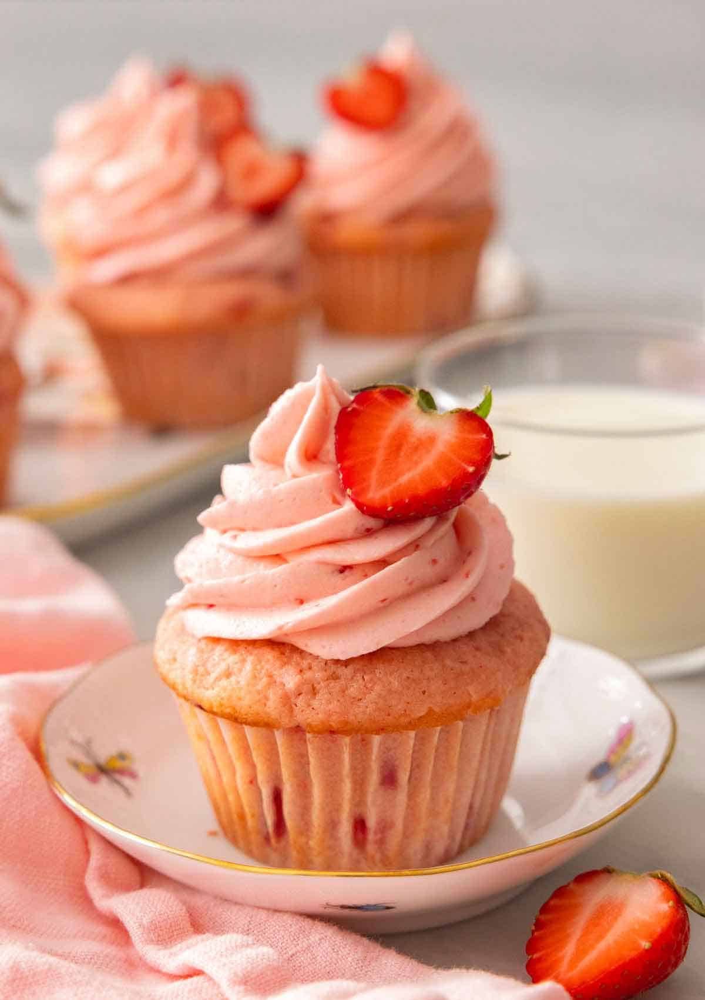

red velvet cupcakes
Moist and fluffy red velvet cupcakes topped with a big dollop of cream cheese frosting are beyond delicious and so easy to make! You'll want to make a double batch because people will want seconds!!

There’s something so addictive about cream cheese frosting; sweetness is tempered with a bit of tang, the texture is creamy and luscious and it’s something you can whip up in a few minutes. I love this frosting on nearly everything but a slightly chocolatey cake creates a special combination known as red velvet!
how to make:
- To make the cupcakes; preheat the oven to 350 degrees and place cupcake papers in a cupcake pan. In a large bowl, sift the dry ingredients (including the sugar) into the bowl of a stand mixer and give it a whisk.
- In a separate bowl, whisk together the wet ingredients until they are well combined, then add some red food coloring. (The batter may be clumpy but do not worry).
- Cut the butter into tablespoon sized dollops and add it to the dry ingredients in the stand mixer and beat together. This should get you a sort of crumbly mixture.
- With your mixer running on low, add the wet ingredients to the dry mixture and mix until everything is incorporated.
- You may want to add a dash or two more of red food coloring until you reach the desired color.
- Distribute the batter evenly into the cupcake papers and bake for 15 to 20 minutes or until the cupcakes are golden and springy to the touch.
- For the cream cheese frosting; start off by sifting the confectioners sugar into a large bowl so there are not any lumps.
- Cream the room temperature butter in a standing mixer with a paddle attachment on medium speed until it is nice and smooth.
- Add the cream cheese and beat together until they’re combined then add the vanilla and salt. Slowly add the sifted confectioners sugar in cups and mix until combined.
chocolate cupcakes
This EASY chocolate cupcakes recipe makes perfect moist, fudgey, fluffy chocolate cupcakes topped with light, silky chocolate Swiss meringue buttercream. I'm warning you ahead of time, you'll have ZERO portion control around them so invite your friends over to help out!
These chocolate cupcakes are a chocolate lover’s dream come true. The cake is rich, and fudgey but with a fluffy consistency that melts in your mouth. I love pairing them with a dreamy chocolate Swiss buttercream since it’s so creamy, and light but not too sweet. I have a link below for my decadent and sweeter American chocolate buttercream recipe if you have a sweet tooth that demands satisfaction though.
how to make:
- Sift the Flour, cocoa powder, salt, sugar and baking soda into a large bowl then whisk together. Sifting is important for chocolate recipes as the cocoa powder has a tendency to clump up.
- Add the sour cream, buttermilk, eggs, and veggie oil into a large bowl and whisk together. Pour the hot coffee in while you whisk and set aside. The coffee doesn’t have to be hot but because the eggs have been mixed in with all the other wet ingredients you won’t end up with a bowl of scrambled eggs!
- Pour the wet ingredients into the dry and whisk together. Scrape the bowl down and give it a really good stir.
- The batter will be VERY thin but don’t worry, it will bake into the MOST MOIST fudgey chocolate cupcakes ever. Fill the cupcake papers 2/3 the way full and bake at 350F for 15-20 minutes or until the centers are set. Don’t over-fill the papers as the batter will rise a good amount.
- Add egg whites, sugar and salt in a bowl. Give the mixture a brief whisk. Place the bowl over a pan of simmering water. Make sure the water does not touch the bowl. Whisk the egg whites occasionally while it warms up. When the mixture has warmed, whisk it constantly. You will heat the mixture until it reaches an internal temperature of 160ºF or until it’s not grainy between your fingers.
- Transfer the egg mixture to a stand mixer, mix with a whisk attachment until you get room temperature glossy peaks. You can add bags of frozen peas around the bowl to cool it down quicker if you’re in a hurry, which I usually am!
- Switch to a paddle attachment and with the mixer running on low add a tablespoon at a time of the room temperature butter. DON’T WORRY when the mixture starts thinning out. It will whip up into the proper consistency once all the butter is added in.
- Drizzle in the melted and cooled chocolate while the mixer is running on low. Scrape the bowl down and mix again. You can now transfer it to a piping bag fitted with a large star tip and decorate the cooled cupcakes.
Strawberry Cupcakes
Soft, fluffy, and moist, these fresh Strawberry Cupcakes will melt in your mouth! Easily made from scratch, these cupcakes are filled with fresh strawberries and topped with a beautiful pink strawberry frosting. These cupcakes are bursting with strawberry flavor and are perfect for any occasion.
If you’ve got fresh ripe strawberries to use up, then you need to make this delightful strawberry cupcakes recipe. These cupcakes are perfectly tender, light, and moist, making for the best spring and summer time dessert recipe. All you need are some simple ingredients, and you’ll have these cupcakes in no time.
There’s no need for any artificial strawberry flavoring here! Not only are there strawberries in the cupcake batter, but there are also strawberries in the frosting, so every bite is full of real, fresh strawberry flavor.
how to make:
- In a medium bowl, whisk together the flour, baking powder, baking soda, and salt.
- In the bowl of a stand mixer fitted with the paddle attachment, beat the butter on medium speed until creamy. Add the sugar and beat until very light and fluffy.
- Stir together the sour cream and whole milk in a measuring cup and set aside.
- Add the eggs, one at a time, beating until fully incorporated before adding the next, scraping down the bowl in between. Beat in the vanilla.
- With the mixer on low speed, gradually add a third of the flour mixture to the butter mixture, followed by half of the sour cream mixture. Repeat, alternating between the flour and sour cream.
- Beat the chopped strawberries into the batter.
- Add food coloring if using.
- Divide the batter among the cupcake liners. Bake one pan at a time for 20 to 25 minutes. Let cool for a few minutes in the pan, then remove the cupcakes and continue cooling on a wire rack.
- Make the frosting by beating the butter and salt on medium speed until very creamy and pale. With the mixer on low speed, gradually add in the powdered sugar and strawberry puree until fluffy combined before adding the vanilla. Increase speed to medium and beat until fluffy and very spreadable, then transfer to a piping bag. Pipe over the cooled cupcakes.
- Garnish with fresh strawberries, if desired.